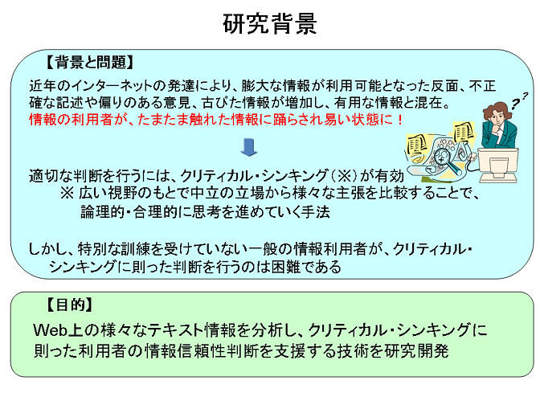
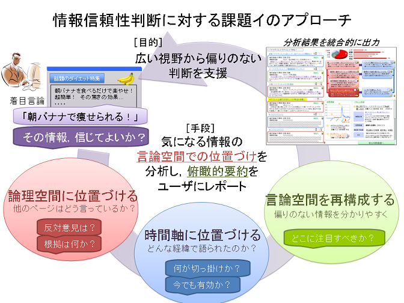

NICT委託研究「電気通信サービスにおける情報信憑性検証技術に関する研究開発」課題イ 意味内容の時系列分析技術の研究[English|Japanese] 2009年9月1日掲載 はじめに近年インターネット上の文書は、その数が爆発的に増大し、我々が日常的に意思決定を行うための重要な情報源となっている。しかし、インターネット上の文書には、しばしば不正確な記述や偏りのある意見、古びた情報が含まれており、利用者の意思決定に有用な情報を分かり易く提供することが難しい状態となっている。こうしたインターネット上の玉石混淆の情報から利用者が適切な意思決定を行うためには、広い視野の下で中立の立場から様々な情報を比較し、論理的・合理的に分析・選別することが必要となる。このような思考方法はクリティカル・シンキングと呼ばれる。 本研究「電気通信サービスにおける情報信憑性検証技術に関する研究開発 課題イ 意味内容の時系列分析技術の研究」では、インターネット上の様々なテキスト情報を分析して、クリティカル・シンキングに則った利用者による情報信頼性の判断を支援する技術の研究開発を行っている。本研究は、独立行政法人 情報通信研究機構(NICT)の委託による、ＮＥＣ、奈良先端科学技術大学院大学、横浜国立大学の３者の共同研究である。 |
|
 |
課題へのアプローチ本研究の課題は、利用者がクリティカル・シンキングに則り、広い視野から偏りのない判断を行えるよう支援することである。我々はこの課題を解決するため、利用者が気になっている情報を簡単なテキストで表現した言論（着目言論）を入力として、インターネット上の文書に記述されている他の言論との関係を分析して言論空間として位置づけて、俯瞰的要約を作成して提示することにより、利用者の情報信頼性判断を支援する技術を開発する。 本研究では、利用者が入力した着目言論に対して、インターネット上の文書から対立や根拠などの論理的な関係を持つ他の言論を収集して、重要な関連言論として提示する（論理空間に位置づける）。利用者は、着目言論と論理的に関係する他の言論を知ることで、様々な側面から物事を捉え、意思決定ができるようになる。 またインターネット上の文書を時系列的に解析することで、人々の意見が変化した経緯を提示するとともに、古くなった情報を検出する（時間軸に位置づける）。利用者は人々の意見が変化した経緯を知ることで多くの人々が持つ意見を大局的に把握できるようになり、また、情報の古さを知ることで、情報の有効性／無効性を判定できる。 さらに、これらの論理的に関連する言論や意見の変化の経緯をまとめ、俯瞰的な要約を生成する（言論空間を再構成する）。この要約は様々な言論の関係性を読み解く手がかりを提示し、どこに注目すべきかを示唆することで、利用者が様々な発信者からの異なる意見を理解して、自らの判断を確立するサポートを行う。 |
|
 |
研究技術項目イ-1-1 着目言論を論理空間に位置づける （奈良先端大） 詳細
イ-1-2 着目言論周辺の言論空間を再構成する （横浜国大） 詳細
イ-2 着目言論を時間軸に位置づける （NEC） 詳細
統合システム、実証実験 （NEC）各技術を統合し情報信頼性判断を支援する統合システムを開発、実証実験にて有効性を確認することを予定している |
|
課題イ「意味内容の時系列分析技術の研究」に関する連絡先：
|